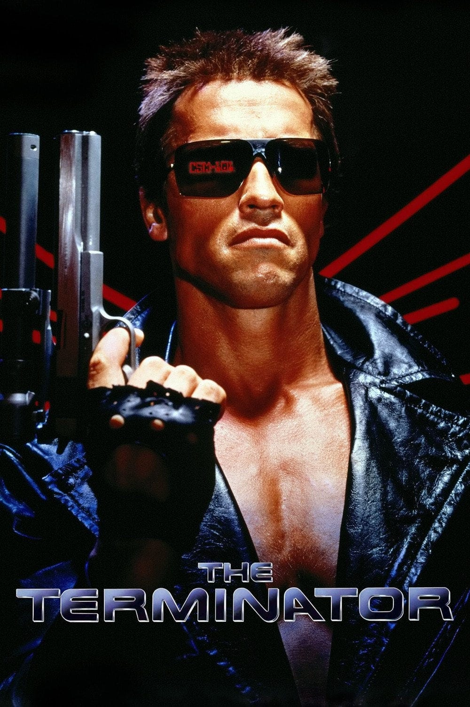

Arnold Schwarzenegger
Legacy of a Champion
Explore

Acting Career
From being told his accent and physique were obstacles to winning a Golden Globe for Stay Hungry (1976), discover how Arnold Schwarzenegger defied the odds to launch his iconic acting career!
Body Building
From dominating bodybuilding history to founding the iconic Arnold Classic, explore how Arnold Schwarzenegger's legacy continues to shape the fitness world!

Political Career
From a surprise announcement on The Tonight Show to winning the 2003 California recall election, discover how Arnold Schwarzenegger became Governor of California!